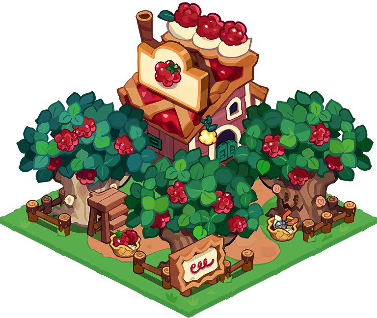
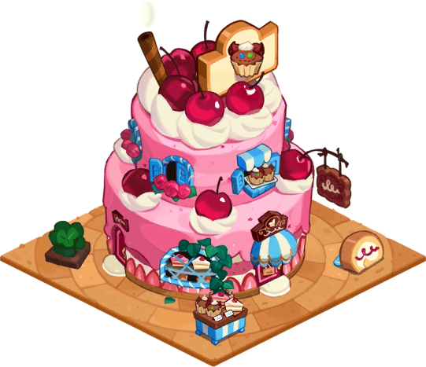

젤리베리 생산 가능
소원나무에서 거래 하지말고 쌓아두자
소원나무에서 거래 하지말고 쌓아두자
쿠키성 3렙까지는 무난하게 올릴 수 있으므로 스킵
11성 존버 및 12성 직행, 생산 빌드 공략| 쿠키성 4렙 |
|---|


젤리베리 생산 가능
소원나무에서 거래 하지말고 쌓아두자 |
| 쿠키성 5렙 |
|---|


캔디꽃 생산 가능
10렙까지 건물 1개 이므로 잘 쌓아두자 |
| 쿠키성 6렙 |
|---|


우유 생산 가능 12렙 까지 건물 1개 이므로 소원나무 거래 X젤리베리 2렙 올릴수 있으니 올려주자 젤리베리 많으면 롤케이크 공작소 2렙 올려주자 도예공방 2렙 올려서 유리판도 제작하자 꽃가게 2렙 올릴수 있으니 올려주자 |
| 쿠키성 7렙 |
|---|


라떼 생산 가능 우유가 적절히 있다 하면 라떼 건물 짓고 생산꽃가게 3렙 X 빠르게 8렙갈 돈 모아서 가자 |
| 쿠키성 8렙 |
|---|


솜사탕 생산 가능 열차 3칸까지 뚫기 가능빵이 여유로우면 달고나 잼을 열어서 코인벌이 빵집은 포카치아 까지 뚫어도 되고 안해도 됨 9렙 준비해서 바로가자 |
| 쿠키성 9렙 |
|---|


루트비어 생산 가능 노란꽃이 여유롭다면 바로 지어주자빠르게 10렙갈 준비해서 가자 도끼,곡괭이,삽,톱 40개 정도 모으고 대장간 2개 동시에 업글 |
| 쿠키성 10렙 |
|---|


머핀 생산가능 우유를 많이 모았다면 빠르게 짓고 머핀 생산가공제품이나 우유는 소원나무 교환 X 코인벌이가 쏠쏠해지는 시기 못올린 건물이나 쿠키하우스를 올리자 쿠키하우스는 7~8렙 정도가 적당함 |
| 쿠키성 11렙 |
|---|


기차에서 오로라 재료를 많이 얻는 시기
건물레벨이 하나씩 올려놓자 영토확장도 하나씩 해주자 500만 코인 모아서 12렙 성 올려주자 |